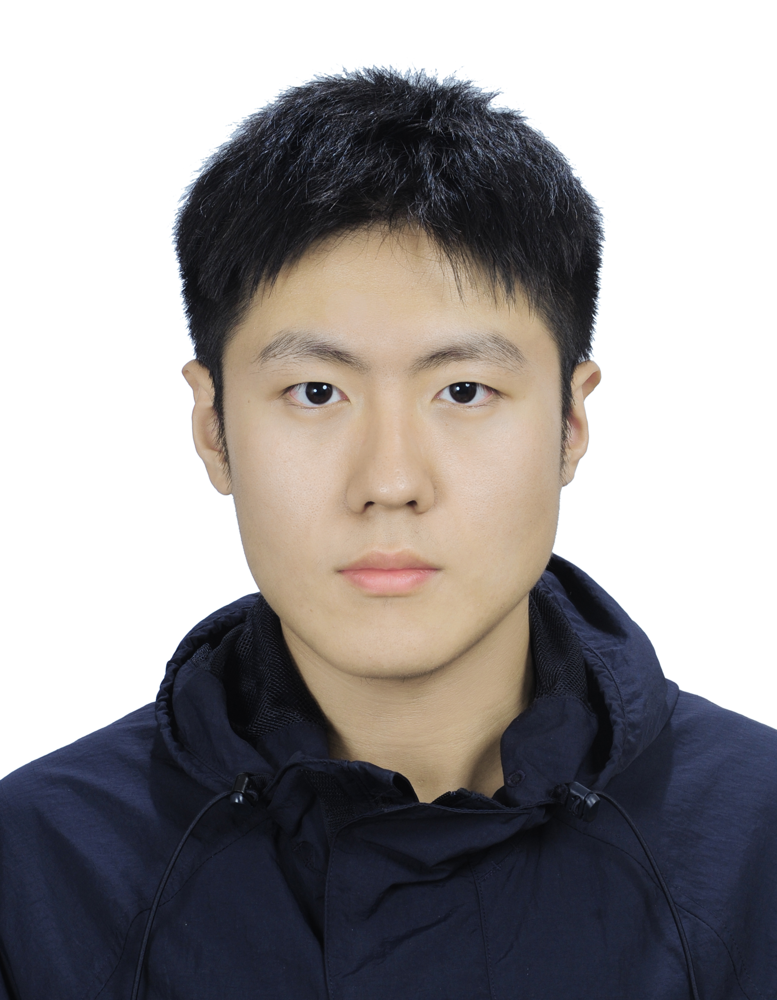

|
Yuanshen Guan I am a Ph.D. candidate in Information and Communication Engineering at the University of Science and Technology of China, advised by Prof. Zhiwei Xiong. My work centers on extending generative models to capture high dynamic range content, express arbitrary spatial attributes, and couple seamlessly with efficient low-level vision systems. I develop gain-map decomposed diffusion for text-to-HDR generation, spherical neural field diffusion for viewpoint-controllable panoramas, and lightweight gain-map LUTs and fusion networks that turn these generative priors into deployable HDR imaging pipelines across images and video. |
 |
{kind=link}
Education
University of Science and Technology of China, Hefei, Anhui
Northeastern University, Shenyang, Liaoning |
Publications |
|
[ICCV 2025] HDR Image Generation via Gain Map Decomposed Diffusion
Y. Guan, R. Xu, Y. Liao, M. Yao, L. Wang, Z. Xiong ICCV, 2025 We introduce a gain-map decomposed diffusion pipeline that delivers the first text-to-HDR image generator, stays compatible with ControlNet and mainstream Stable Diffusion extensions, and scales SDR-to-HDR synthesis to native 4K resolution. |
|
[ICLR 2026] Arbitrary-Shaped Image Generation via Spherical Neural Field
Diffusion
J. Xia*, Y. Guan*, R. Xu, J. Li, Z. Xiong ICLR, 2026 (under review) We perform diffusion over spherical neural fields with latent sampling, enabling explicit control over viewpoint, field of view, and output resolution to generate perspective, panoramic, and fisheye imagery with sharply improved texture detail and geometric consistency. |

[IJCV] Diffusion-Promoted HDR Video Reconstruction
Y. Guan, R. Xu, M. Yao, R. Gao, L. Wang, Z. Xiong International Journal of Computer Vision (under review) We investigate diffusion priors for HDR video reconstruction, treating noisy or motion-blurred frames as out-of-distribution samples for targeted refinement, and achieve up to 15% LPIPS improvements with cleaner temporal consistency. |
|
[ICLR 2026] Ultra-Fast Inverse Tone Mapping via Gain Map-based LUT
Y. Guan, R. Xu, Y. Liao, Z. Xiong ICLR, 2026 (under review) We design a gain-map based lookup table architecture and curate a paired SDR-to-gain-map dataset, enabling high-fidelity SDR-to-HDR conversion in 6.2 ms per 4K frame on a V100 GPU with a 1.4 dB PSNR improvement over prior inverse tone mapping methods. |
|
[ICLR 2025] Learning Gain Map for Inverse Tone Mapping
Y. Liao, Y. Guan, R. Xu, J. Li, S. Sun, Z. Xiong ICLR, 2025 We present the first inverse tone mapping model that directly learns gain maps, together with synthetic and real benchmark datasets, demonstrating gains of up to 2.7 dB PSNR over previous inverse tone mapping networks. |

[ACMMM 2024] Mutual-Guided Dynamic Network for Image Fusion
Y. Guan, R. Xu, M. Yao, L. Wang, Z. Xiong ACM Multimedia, 2024 We couple dynamic convolution with a mutual-information alignment loss to build a unified image fusion framework, reaching state-of-the-art across seven benchmarks spanning multi-focus, multi-exposure, RGB-infrared, RGB-depth, and HDR de-ghosting tasks. |
|
[ACM TOMM] EdiTor: Edge-guided Transformer for Ghost-free HDR
Imaging
Y. Guan, R. Xu, M. Yao, J. Huang, Z. Xiong ACM Transactions on Multimedia Computing, Communications, and Applications We use image gradients as illumination-invariant cues to guide transformer self-attention, making cross-exposure correspondence robust and ghost-free, and deliver state-of-the-art quantitative and perceptual HDR results on three public benchmarks. |
|
[IEEE TCI] Learning Continuous Degradation for Arbitrary-Scale Blind
Super-Resolution
J. Xia, Y. Guan, R. Xu, J. Li, M. Yao, Z. Xiong IEEE Transactions on Computational Imaging We model degradation as a continuous latent trajectory, allowing a single network to handle arbitrary upscaling factors while restoring sharp details under unknown blur and noise. |
|
[IEEE TCI] Learning Piece-wise Planar Representation for Guided Depth
Super-Resolution
R. Xu, M. Yao, Y. Guan, Z. Xiong IEEE Transactions on Computational Imaging We learn piece-wise planar representations to guide depth super-resolution, preserving geometric boundaries and suppressing texture-copy artifacts in guided depth completion. |
|
[IEEE TIP] Neural Degradation Representation Learning for All-In-One
Image
Restoration
M. Yao, R. Xu, Y. Guan, J. Huang, Z. Xiong IEEE Transactions on Image Processing We train a shared degradation-aware prior for all-in-one image restoration, enabling a single model to adapt to diverse noise, blur, and compression scenarios with strong quantitative and visual quality. |
Honors & Awards
|